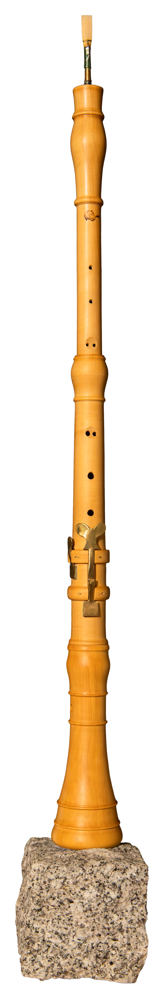

Oboe in C
after Jeremias Schlegel
at 415 Hz
Jeremias Schlegel learned the trade of woodwind maker from his father Christian Schlegel, who probably came from the St Gallen Rhine valley and emigrated to Basel.
Jeremias Schlegel himself worked in Basel, having taken over his father’s workshop at just sixteen, on his father’s death. Instruments from his workshop are found today in various museums and collections.
The instrument I copy comes from the Michel Piguet collection and was probably tuned originally at 408 or 410 Hz. That value is harder to establish for an oboe than for a recorder, since the shape, the length and the placement of the reed have a decisive influence on intonation and tuning and therefore leave a certain latitude in this respect. The original was made between 1750 and 1765 and is in boxwood. It is a very beautiful instrument, with a simplicity of form that already foreshadows the shape the oboe would take in later periods, while remaining faithful to the characteristics of Baroque-era making. To adapt it to the demands of performing at a pitch of 415 Hz it nevertheless required a great deal of adaptation work and research into tuning. I make it in boxwood.
Price on request